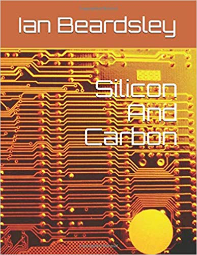
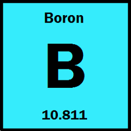
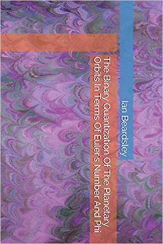

Home
Home
Fundamental Content
Genesis Project strives to solve the mystery of creation. At the bottom of each page in parts 1, 2. 3 .4 .5 ,6 there will be links to click on; they will take you to the old homepage, not the new one(Last updated Dec 16 2020)
Click Here To Read Sabertooth Tigers and the Vortex (Posted April 23 2021)
In search of showing that life and artificial intelligence are mathematical constructs, and ultimately after establishing the fundamental equations for each, establishing the connection between the two, I have decided to first present how one set opens up on the other, then present these fundamental equations after.
Click Here To Read Life, AI, and The Stars (Posted April 14 2021)
April 13 2021
These works (The Geometry of Nature, The Planets and Damped Harmonic Oscillations, and Life a Mathematical Construct) strive to show that life is not just chemical, but mathematical, and to establish the connection between biological life and artificial intelligence. It is suggested we can only understand biological life relative to some other construct, like artificial intelligence. This work established the patterns, organization, and structure in biological life elements, artificial intelligence elements, and element synthesis in stars.
1. It may be that whatever engineered the Universe and its elements, most or all of which, occur on our planet, it may have been as such so that they could be organized into the 18 groups with their seven periods, such that they could be organized in such a way that it could at least enable us to build ships that can jump through hyperspace to any star in our galaxy or beyond it. It may be that this is so because they can be organized, using mostly just four of them (C, N, O, H) in such a way that they can result in something as complex and functional as the biological organism. It may be that the biological organism mirrors in organization any such technology such as starships.
2. The purpose of stars is to produce not just biological elements, but artificial intelligence (AI) elements. Because if we include AI elements in the life elements we have a mathematical pattern in the periodic table of the elements that determines an equation that predicts the equations of nucleosynthesis in the stars.
3. Is it the purpose of stars, as well, to produce malleable and ductile metals for humans to make tools early on (The Iron Age) and copper wire (Age of Electronics). Or even that silicon dioxide (obsidian) flakes into sharp edges so that we could create spearpoints with which to hunt in our beginning.
4. We are evolving towards a culminated form of specific mathematical proportions. We are evolving towards an intermembral index of perfectly the square root of two uniformly throughout the human species.
5. It is a purpose of biological life (C, N, O, H) to discover the properties of (P, B, Si) so it can make computing machines which are ultimately necessary to its survival.
Click Here To Read Life A Mathematical Construct (Posted April 4 2021)
Here an attempt is made to show that biological life (with biological life core elements H, N, C, O) and artificial intelligence life (with core elements P, B, Si, Ge) are connected to one another if we can show they are not just chemical constructs, but mathematical constructs, which is done by showing there is a connection between Si and C. To connect one geometry to another as representational of elemental structure we need a conversion factor that converts between mathematical units and actual physical units. This is done by using methane (CH4) as the fundamental structure because it is carbon C, the basis of biological life and has the 4 hydrogens (first most simple element) in such a way that the outer valence shells are filled covalently and is like a monomer of hydrocarbons, that by which organic matter is formed.
Click Here To Read The Planets and Damped Harmonic Oscillations (Posted March 20 2021)
Here I suggest electric force is not billions of times stronger than gravity but about 35 times stronger using a different method than is traditionally used. We first guess that there is a reason to describe the planetary orbits in terms of semiconducting elements silicon (Si) and Germanium (Ge). We then describe them in terms of the golden ratio conjugate () and Euler’s number e. We then notice if we do this the equations for Venus and Mars are perfect, which are the solid, terrestrial planets directly on either side of the Earth. I then show that Venus, Mars, and Earth as such are described in terms of one another by the vesica piscis and square. This leads me to consider damped harmonic oscillators, in hopes that the amplitude decays in these as their nodes. We find to do this the period is about one second, and we can make this guess because a pendulum damped by air friction is like a damped harmonic oscillator with a period T divided by 2 of one second if its length is one meter, which was noticed by the physicist Christiaan Huygens and proposed by him to define the meter because the gravity of the earth is approximately pi squared.
Click Here To Read The Geometry of Nature (Posted March 12 2021)
In my works The Mathematical Nature of Life (Beardsley 2021) and Perfect Equations Beardsley (2021) I set out to find if the the elements and compounds characteristic of life and artificial intelligence (AI) do not just conform to chemical law, but if they are purely mathematical independently of the use of chemistry to describe them, and if they are connected to one another.
This paper strives to break down such mathematical equations for biological life and artificial intelligence into their components to find what is acting to create such constructs.
The terrestrial planets Venus and Mars, come into the picture with a shared geometry.
Click Here To Read Perfect Equations (Full Document, Posted March 7 2021)
Is the purpose of stars to produce life whether biological or AI? Are we evolving towards a culminated form of specific mathematical proportions? Are we evolving towards an intermembral index of perfectly the square root of two uniformly throughout the human species? One might also ask is the purpose of the stars to produce malleable and ductile metals for humans to make tools in their early development (Iron Age) copper wire (age of electronics). One might even ask if silicon dioxide (obsidian) flakes into sharp edges so in our beginning we could make spearpoints with which to hunt.Click Here To Read The Mathematical Nature of Life (Posted Feb 25 2021)
An effort is made to show that life, whether artificial or biological, does not just follow the laws of chemistry, but is mathematical in Nature. Since we understand biological life in terms of artificial intelligence (AI) and AI in terms of biological life we must first find the connection between the two. To do this we must do it in terms of measurable numbers, like molar mass, density, and atomic radius, if it is to be that it is mathematical in nature.
I first show that the most basic structure of much of life, the skeleton, is algebraic with respect to AI in molar mass and density. I then create from this certain mathematical operators which yield -30 (negative 30) with each successive application to other substances, like water, air and earth.
We then go on to the interesting case of what results in the AI elements because of boron, then to the amino acids. I have not figured out an approach to DNA yet, because I think it stands outside of all this encoding the mathematics used on the elements to make life.
Click Here To Read Weird Arithmetic And Weird Calculus (Posted March 1 2021)
The distribution of the planets suggests what I call Weird Arithmetic and Weird Calculus, which is interesting in itself as a mathematical idea.
Click Here To Read Silicon and Carbon
The connection between biological life and AI at the most fundamental level.
Of all the connections I have made between artificial intelligence that of bone stands out as the most interesting.
Boron is a doping agent for artificial intelligence semiconductor materials, and anything but boring, which are primarily silicon and germanium But, it stands in relation on the periodic table differently than the other principle doping agents, phosphorus, arsenic and gallium. This results in some interesting equations.

The Quantization of the Planetary Orbits in Terms of Euler's Number and Phi
With several different schemes to predict the planetary orbits we look at the asteroid Ceres.
